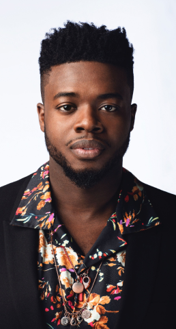

Kevin Olusola
Kevin Olusola, né le 5 octobre 1988 à Owensboro (Kentucky, États-Unis), est un musicien, beatboxer, violoncelliste, rappeur, producteur de disques, chanteur et auteur-compositeur américain. Olusola est surtout connu comme le beatboxer et un des chanteurs du groupe vocal Pentatonix
